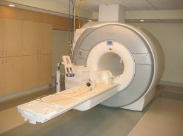
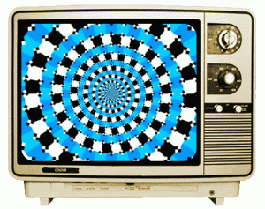

<?xml version="1.0" encoding="UTF-8"?>
<rss version="2.0"
	xmlns:content="http://purl.org/rss/1.0/modules/content/"
	xmlns:wfw="http://wellformedweb.org/CommentAPI/"
	xmlns:dc="http://purl.org/dc/elements/1.1/"
	xmlns:atom="http://www.w3.org/2005/Atom"
	xmlns:sy="http://purl.org/rss/1.0/modules/syndication/"
	xmlns:slash="http://purl.org/rss/1.0/modules/slash/"
	>

<channel>
	<title>The Civilization Gene</title>
	<atom:link href="http://civgene.matthewnewhall.com/feed" rel="self" type="application/rss+xml" />
	<link>http://civgene.matthewnewhall.com</link>
	<description>Civilization is the Logic of Compassion</description>
	<lastBuildDate>Fri, 23 Jan 2015 14:11:42 +0000</lastBuildDate>
	<language>en-US</language>
	<sy:updatePeriod>hourly</sy:updatePeriod>
	<sy:updateFrequency>1</sy:updateFrequency>
	<generator>http://wordpress.org/?v=3.6.1</generator>
		<item>
		<title>New paper &#8211; Falsifiability of civgene</title>
		<link>http://civgene.matthewnewhall.com/archives/736</link>
		<comments>http://civgene.matthewnewhall.com/archives/736#comments</comments>
		<pubDate>Wed, 21 Jan 2015 07:20:33 +0000</pubDate>
		<dc:creator>Matthew Newhall</dc:creator>
				<category><![CDATA[civilization gene]]></category>
		<category><![CDATA[collapse]]></category>
		<category><![CDATA[economics]]></category>
		<category><![CDATA[psychopaths]]></category>
		<category><![CDATA[science]]></category>
		<category><![CDATA[screening]]></category>
		<category><![CDATA[society]]></category>
		<category><![CDATA[study]]></category>

		<guid isPermaLink="false">http://civgene.matthewnewhall.com/?p=736</guid>
		<description><![CDATA[Put together a draft of the falsifiability of different genetic civgene theories.   Take a look.  It should prove useful. http://www.civgene.matthewnewhall.com/papers/Civgene-falsifiability.html]]></description>
				<content:encoded><![CDATA[<p><a href="wp-content/uploads/2015/01/remains.jpg"></a></p>
<p>Put together a draft of the <a title="wikipedia - Falsifiability" href="http://en.wikipedia.org/wiki/Falsifiability">falsifiability</a> of different genetic civgene theories.   Take a look.  It should prove useful.</p>
<p><a title="Civgene Falsifiability" href="http://www.civgene.matthewnewhall.com/papers/Civgene-falsifiability.html">http://www.civgene.matthewnewhall.com/papers/Civgene-falsifiability.html</a></p>
]]></content:encoded>
			<wfw:commentRss>http://civgene.matthewnewhall.com/archives/736/feed</wfw:commentRss>
		<slash:comments>0</slash:comments>
		</item>
		<item>
		<title>Civgene, why now?</title>
		<link>http://civgene.matthewnewhall.com/archives/723</link>
		<comments>http://civgene.matthewnewhall.com/archives/723#comments</comments>
		<pubDate>Fri, 16 Jan 2015 21:10:55 +0000</pubDate>
		<dc:creator>Matthew Newhall</dc:creator>
				<category><![CDATA[entertainment]]></category>
		<category><![CDATA[forgiveness]]></category>
		<category><![CDATA[golden opportunity]]></category>
		<category><![CDATA[metamind]]></category>
		<category><![CDATA[psychology]]></category>
		<category><![CDATA[reason]]></category>
		<category><![CDATA[republic]]></category>
		<category><![CDATA[study]]></category>
		<category><![CDATA[trust]]></category>
		<category><![CDATA[Uncategorized]]></category>

		<guid isPermaLink="false">http://civgene.matthewnewhall.com/?p=723</guid>
		<description><![CDATA[Why me? I&#8217;ve been asking myself this question since about since the civgene first dawned on me in about 2011 or so.  Most &#8216;leaders&#8217; are simply in the right place at the right time.  The person will need certain skills, but they always need to be &#8216;lucky&#8217; in the timing of their role.  I am [&#8230;]]]></description>
				<content:encoded><![CDATA[<p style="text-align: center;"><a href="wp-content/uploads/2015/01/MRI.jpg"></a></p>
<p><strong>Why me?</strong></p>
<p>I&#8217;ve been asking myself this question since about since the civgene first dawned on me in about 2011 or so.  Most &#8216;leaders&#8217; are simply in the right place at the right time.  The person will need certain skills, but they always need to be &#8216;lucky&#8217; in the timing of their role.  I am no exception.  The closer I look the more I realize that everything was set up just right, and I very nearly just had to be present.  The moment of inception the tiniest breeze.  Had things been even slightly less well timed I would have noticed, and contributed, nothing.  I am merely the envoy between civilization, and it&#8217;s readiness for a new idea.</p>
<p>I have an associates degree in computer science.   My mother had a masters degree.  My wife has two!  I know I am capable of furthering my education, but never elected to.  With some irony, this may have been the key to having all the pieces I needed to discover something new in science.  A good monthly salary was my goal, when I recognized the need for intelligence and natural skill in system administration.  I was about to begin my bachelors degree, when the dot com bubble swept me into a professional role.</p>
<p>Making myself into a Linux specialist, suited the needs in three separate scientific research institutions.  This along with my non-profit Linux work gave me a broad base in both diverse computing environments and the social wonders of open source.  My wife studied psychology.  My mother studied and eventually taught business and economics after obtaining her MBA.  I was exposed to disciplines that would rarely or never be placed together in a college environment.  I am &#8216;passionately curious&#8217; but in the past this manifested as an interest in viewing, reading and writing science fiction, not pushing the boundaries of hard science</p>
<p>Ultimately it was some rough events in my personal life that drove me to look deeper into psychopaths.  I wanted to find an angle to protect myself and others.  Hare estimates that 2-5% of population are psychopaths.  This is not small and made this the most likely part of my unlikely journey.  It was inevitable that I would have a hard run in with a psychopath.  That is everyone&#8217;s reality.</p>
<p>I&#8217;ve long since struggled with the huge leaps that economics takes to explain civilization, or money.  For years I was at a loss to explain why anyone would anyone would help Linux for free.  I&#8217;ve struggled to understand why artificial intelligence was so icy cold.  How people can trust each other in the face of thousands or even tens of thousands of risks a day, seemingly unaware, and survive.  In my desperation it all gelled together.</p>
<p>The <a title="http://civgene.matthewnewhall.com/papers/Psychopaths-ancient-breed.html" href="papers/Psychopaths-ancient-breed.html">civilization gene</a> is obvious in hindsight.  Once I knew roughly how psychopaths acted what was missing jumped out.  My logical training made me look in both directions, spotting the absence of behavior, the negative instead of the positive.  As if debugging a program.  I had a rough idea that game theory failed in the real world from my own disappointment with AI, and from science studies.  It connected to my cynicism about the foolish trust people but not animals seemed to display.  Without every piece of my background I could not have connected the clues.  The lynchpin was real world tuning of computers. Unassuming, unforgiving computers.</p>
<p>I would watch PBS as a child.  For decades shows like &#8216;Nature&#8217; were the best entertainment on the television.  Years of programming just discussing, filming and studying animal behaviour.  Monkeys, primates, any of them.  They move around.  No animal with legs or wings longer than a centimeter stays put.  They can have territories, but not properties.  Only mankind, and only at the beginning of civilization, had such a distinction.  That&#8217;s a big change.  It doesn&#8217;t just happen for no reason.</p>
<p>Psychopaths are cavemen.  Currency and investment, the cornerstones of civilization, are just huge bags of trust.  Something you can&#8217;t have without empathy.  The realization flashed into existence.  The solution to the chicken and the egg problem of economics.  Who trusted first and why.  It wasn&#8217;t a choice.  Empathy, at least at the scale only humans display, is a mutation.  The very last one most of us shared.  Everything after, as they say, is history.</p>
<p><strong>Why now?</strong></p>
<p>This is an easier question.  The easy answer is one acronym.  MRI.  And all the technologies that led up to it.  Dr. Robert Hare demonstrated a clear pattern of different brain activity between a psychopath and empath.  That would not have been possible without the MRI.</p>
<p>The same scans that helped me to recognize, combined with civgene, how the conscience actually works.  Body part and body function archetype thoughts light up the brain.  I recognized the signature for the empath from computing.  A computer database thrashing a computers hard drive on a wildcard search.   The physical structure wasn&#8217;t important, but what it was doing.  Accessing every memory at once.  All connected.  A passively driven database connected by emotion.  A <a title="http://civgene.matthewnewhall.com/archives/category/metamind" href="http://civgene.matthewnewhall.com/archives/category/metamind/index.html">metamind</a>.</p>
<p>I&#8217;d also say the Internet.  It is both responsible for a growing breadth of knowlage, dissemination of it, and for open source and Linux themselves.  I can&#8217;t deny the impact of watching a hobby grow into the most important operating system in the world without a single line of code written under threat of hard power.  Massive cooperation, investment, and economy of scale without any psychopathic behaviour driving it.  Open source is what science aspires to be.  Pragmatic but testable and repeatable.  Open both to innovation and scrutiny by anyone.  Perhaps someone else could have put it together without the society behind open source, but I could not.</p>
<p>I wanted to write this so that people can understand how it is possible that I without a grant, a PHD, or even more than a passing interest until a few years ago could be the one to discover something so fundamentally important to humanity, it&#8217;s origin.  Why not someone who is smarter, or more schooled?   This is the right time.  Had I not found it someone else would have.  The MRI and the Internet and open source were all in place by about the mid 1990s.  A whole sixteen years passed before I finally pieced it together.  The background was there, but I was missing something.  The study of psychopathy.   A few well written books and civgene snapped into place.</p>
<p><em>Thanks to Dr Whitney Winter for suggesting I write this.</em></p>
]]></content:encoded>
			<wfw:commentRss>http://civgene.matthewnewhall.com/archives/723/feed</wfw:commentRss>
		<slash:comments>0</slash:comments>
		</item>
		<item>
		<title>Humans, violence, and faith</title>
		<link>http://civgene.matthewnewhall.com/archives/713</link>
		<comments>http://civgene.matthewnewhall.com/archives/713#comments</comments>
		<pubDate>Fri, 09 Jan 2015 19:03:21 +0000</pubDate>
		<dc:creator>Matthew Newhall</dc:creator>
				<category><![CDATA[ASPD]]></category>
		<category><![CDATA[conscience]]></category>
		<category><![CDATA[empaths]]></category>
		<category><![CDATA[faith]]></category>
		<category><![CDATA[intelligence]]></category>
		<category><![CDATA[know yourself]]></category>
		<category><![CDATA[logic]]></category>
		<category><![CDATA[meta-psychopaths]]></category>
		<category><![CDATA[metamind]]></category>
		<category><![CDATA[proto-psychopaths]]></category>
		<category><![CDATA[psychopaths]]></category>
		<category><![CDATA[society]]></category>
		<category><![CDATA[violence]]></category>

		<guid isPermaLink="false">http://civgene.matthewnewhall.com/?p=713</guid>
		<description><![CDATA[&#160; We are all psychopaths underneath our conscience. Since even low EQ/IQ empaths ace the psychopath variations of wants/abilities/limits with the aid of the metamind, and one third of that is (psychopath &#8216;abilities&#8217; aka ASPD) we will always be capible of violence. All animals are violent. It&#8217;s not personal. It&#8217;s survival. Compared to us they [&#8230;]]]></description>
				<content:encoded><![CDATA[<p style="text-align: center;"><a href="wp-content/uploads/2015/01/hug.jpg"></a></p>
<p>&nbsp;</p>
<p>We are all psychopaths underneath our conscience. Since even low EQ/IQ empaths ace the psychopath variations of wants/abilities/limits with the aid of the metamind, <b>and</b> one third of that is (psychopath &#8216;abilities&#8217; aka ASPD) we will always be capible of violence.</p>
<p>All animals are violent. It&#8217;s not personal. It&#8217;s survival. Compared to us they are all psychopaths. We project our love, compassion and empathy all around us. People, animals, plants, inanimate objects. Especially if it has a large head to body ratio and big eyes. A non psychopath human (an empath) can flatten any other selfless act in the animal kingdom to a rounding error in pure scale.</p>
<p><b><span style="text-decoration: underline;">When our conscience/metamind determines that someone/something else doesn&#8217;t have a conscience, it sets our inner psychopath loose.</span> Violence becomes many times more likely.</b></p>
<p>Note that a metapsychopath may have no negative reaction to a moment of external &#8216;no conscience&#8217; realization. It&#8217;s because they have been conditioning their psychopathic self to act on behalf of the conscience, but without it&#8217;s typical continuous input. No loss of control occurs as the state of logical selfishness is reached, because it has been reconciled with and serves the temporally dormant metamind. The conscience simply steps back the and empath deals with the situation in strictly rational terms.</p>
<p><b>The metamind can even be the driving force behind violence. For instance violence in the name of a faith.</b> A conscience can normalize the idea that a particular faith is the only valid demonstration of a person having a conscience. Then it lets the inner psychopath loose and screams, strikes, rapes and kills like a Viking raiding party.</p>
<p>That example is why it&#8217;s so important to separate faith from cult. Cult thinks it is the only true path, demonstrated by thinking it is above reproach. If you deviate from it, criticize it, or try to leave it, the conscience of it&#8217;s members shut off, and it&#8217;s members become temporary psychopaths in the face of a heretic. Sooner or later, violence results.</p>
<p>Why does this not occur with the metapsychopath? Because they are in control of the change. Their rational and metamind are resolved. Usually way in advance through inner work as rationalization and emotional self learning.</p>
<p>The cult is not just a faith but an organization. And organization that programs it&#8217;s members into protopsychopaths. The protopsychopath has no control over the change. They see, react, and act.</p>
<p>Faith is critical to the conscience, but it can never be allowed to monopolize it. The worst ASPD psychopath can&#8217;t hold a candle to the destructive power of a faithful fanatic with a conscience. For individual action, ruthless self sacrifice is unmatched in our world. <b>The check to prevent faith from leading to protopsychopathy is the recognition that we can only grow emotionally through doubt and mistakes. That knowlage is critical to being in control of ones own conscience.</b></p>
<p>That&#8217;s the difference between a religion and a cult. Both are organizations of faith, but only one disables the individuals ability to control their own conscience.</p>
]]></content:encoded>
			<wfw:commentRss>http://civgene.matthewnewhall.com/archives/713/feed</wfw:commentRss>
		<slash:comments>0</slash:comments>
		</item>
		<item>
		<title>Childhood love and EQ</title>
		<link>http://civgene.matthewnewhall.com/archives/700</link>
		<comments>http://civgene.matthewnewhall.com/archives/700#comments</comments>
		<pubDate>Wed, 24 Dec 2014 21:44:30 +0000</pubDate>
		<dc:creator>Matthew Newhall</dc:creator>
				<category><![CDATA[childhood]]></category>
		<category><![CDATA[conscience]]></category>
		<category><![CDATA[defense against psychopaths]]></category>
		<category><![CDATA[emotional triggers]]></category>
		<category><![CDATA[empaths]]></category>
		<category><![CDATA[gaslighting]]></category>
		<category><![CDATA[genetics]]></category>
		<category><![CDATA[know yourself]]></category>
		<category><![CDATA[masters and slaves]]></category>
		<category><![CDATA[meta-psychopaths]]></category>
		<category><![CDATA[propaganda]]></category>
		<category><![CDATA[proto-psychopaths]]></category>
		<category><![CDATA[psychology]]></category>
		<category><![CDATA[psychopaths]]></category>
		<category><![CDATA[society]]></category>

		<guid isPermaLink="false">http://civgene.matthewnewhall.com/?p=700</guid>
		<description><![CDATA[Just click on the image for the big version. I recently realized a very simple way to describe the difference between a protopsychopath and metapsychopath.  Both are when an empath (not a psychopath) suspends their conscience temporally, allowing them to act like a psychopath. The difference is, who is in control of the change. A [&#8230;]]]></description>
				<content:encoded><![CDATA[<p style="text-align: center;"><a href="wp-content/uploads/2014/12/Love-and-EQ.jpg"></a><em>Just click on the image for the big version.</em></p>
<p>I recently realized a very simple way to describe the difference between a protopsychopath and metapsychopath.  Both are when an empath (not a psychopath) suspends their conscience temporally, allowing them to act like a psychopath.</p>
<p><strong>The difference is, who is in control of the change.</strong></p>
<p><strong>A protopsychopath </strong>is captured by outside forces.  A person or persons uses emotional manipulation to negate the useful warnings of the target&#8217;s conscience.  Careful control of nearly every experience (it can take an entire childhood or lifetime for example.) can result in a protopsychopath, an empath who not only respects the master/slave model, but lives by it.  In the diagram the most likely candidate would be a person with a low EQ and little parental love.</p>
<p><strong>A metapsychopath</strong> is an empath in control of their emotions.  Not that they don&#8217;t have them but that they can temporally suspend them in order to interact with psychopaths and psychopathic societies with minimal personal influence.   It is a defense against emotional mind control, and can be a way to initiate and function in a psychopathic alliance.  Great empathic leaders must visit and use these powers to varying degrees.</p>
<p>It is important to remember that both states are temporary and induced by a rational intelligence.  The conscience is both self healing and anti-fragile.  In other words, simply removing a protopsychopath from external influence, can completely break control given enough experiences.   Likewise metapsychopaths will fall out of practice if not exposed to psychopathic behaviour for a period of time.  This is why empaths with high EQs and a difficult background (possibly post childhood) make great leaders.   They are driven to condition themselves against selfish binary behaviour and may seek it out simply for practice with their metapsychopath skills.</p>
]]></content:encoded>
			<wfw:commentRss>http://civgene.matthewnewhall.com/archives/700/feed</wfw:commentRss>
		<slash:comments>0</slash:comments>
		</item>
		<item>
		<title>Did Aristotle predict the metamind?</title>
		<link>http://civgene.matthewnewhall.com/archives/687</link>
		<comments>http://civgene.matthewnewhall.com/archives/687#comments</comments>
		<pubDate>Mon, 15 Dec 2014 18:59:29 +0000</pubDate>
		<dc:creator>Matthew Newhall</dc:creator>
				<category><![CDATA[capitalism]]></category>
		<category><![CDATA[civilization gene]]></category>
		<category><![CDATA[compound emotions]]></category>
		<category><![CDATA[conscience]]></category>
		<category><![CDATA[defense against psychopaths]]></category>
		<category><![CDATA[Distribution Party]]></category>
		<category><![CDATA[economics]]></category>
		<category><![CDATA[empaths]]></category>
		<category><![CDATA[government]]></category>
		<category><![CDATA[metamind]]></category>
		<category><![CDATA[primary emotions]]></category>
		<category><![CDATA[propaganda]]></category>
		<category><![CDATA[proto-psychopath]]></category>
		<category><![CDATA[psychology]]></category>
		<category><![CDATA[psychopaths]]></category>
		<category><![CDATA[reason]]></category>
		<category><![CDATA[republic]]></category>
		<category><![CDATA[subconscious]]></category>

		<guid isPermaLink="false">http://civgene.matthewnewhall.com/?p=687</guid>
		<description><![CDATA[Aristotle seems to have predicted the functional aspect of the metamind with his ethical system centered around the golden mean.  The golden mean is used in many ethical frameworks but generally works the same in all of them.  It&#8217;s the tendency of moral agents to have a moderate response. The golden mean is really just [&#8230;]]]></description>
				<content:encoded><![CDATA[<p><a href="wp-content/uploads/2014/12/Aristotle.jpg"></a></p>
<p>Aristotle seems to have predicted the functional aspect of the metamind with his ethical system centered around the golden mean.  The golden mean is used in many ethical frameworks but generally works the same in all of them.  It&#8217;s the tendency of moral agents to have a moderate response.</p>
<p>The golden mean is really just an averaging system.  Pulling from the whole of your personal context and experience and choosing a path in the center not the extremes of deficiency or excess.  The very process of describing a mean is a likelihood based on context.  Or in other words a probability.  The metamind (or conscience) is actually a probability engine for discerning the expected value based on the compound (mandatory) emotional state felt when the rational side of a dilemma is considered.  The main attribute that is missing is in the time attribute limit or the ability to expand or shrink the scope of emotional context by duration.  This seems to indicate psychopathy&#8217;s most visible symptom, the inability to group risk by time.  Long term risk management suffering the most, as decisions all seem to benefit now at the expense of later.</p>
<p>This is where his system starts to fall apart.  Aristotle did have the concept of mentally ill or deficient, but worked on the principle that it was curable.  He does not consider that there may be two separate high functioning sets of behaviour displayed by superficially identical human beings.  The first processing the ability to discern the mean(risk) in a flash of insight, and the second that each moral choice was a major struggle.  This resulted in the real world failures of modern day moral relativism.  Where in the worst case the mean is reached only after the abhorrent behaviour is normalized and the scope is tweaked to provide the desired results by an outside influence.  Such as proto-psychopaths, non psychopaths who have been influenced over time to negate their ability to perform moral calculations.  The conscience is there, but captured and temporarily but actively neutralized by outside forces.</p>
<p>Interestingly he discusses a political philosophy very similar to Civgene&#8217;s own Distribution Party.   The politics of distribution of equity might be mistaken for a precursor to communism at a glance, but clearly were meant to be taken in the context of struggle of each conscionable human has to accumulate what he would call virtues.  He calls for monetary equality, but it should be taken as above as opportunity to pursue happiness via virtues or to become virtuous.  Complaining about the monetary motivation of oligarchy, it is as if he commenting on the inverse totalitarianism of today.  Taking control of federal equity from the corporations, who are incapable of virtue, and returning them to states or lower, at least who&#8217;s components, the citizens, are capable of ongoing, time scope sensible, risk assessment or as he would say, the pursuit of virtue or happiness.  He might list in it&#8217;s positive aspects, the abilities of equipped happiness perusing citizens in generating sensible natural law for practical, long term, context sensitive equity distribution.</p>
<p>This is just scratching the surface of his work and it&#8217;s similar insights.  His influence is vast and works many.  Many others have expounded and further developed these ideas since his time.  But it seems to be he was the very first to identify just how what we typically call the conscience works.  Bouncing between psychology (generating rational copies of both individuals and society&#8217;s emotional maps) and the structure by which such maps are generated, meta-psychology.</p>
]]></content:encoded>
			<wfw:commentRss>http://civgene.matthewnewhall.com/archives/687/feed</wfw:commentRss>
		<slash:comments>0</slash:comments>
		</item>
		<item>
		<title>2013 study: Entertaining conspiracy theory indicates emotional blance</title>
		<link>http://civgene.matthewnewhall.com/archives/678</link>
		<comments>http://civgene.matthewnewhall.com/archives/678#comments</comments>
		<pubDate>Mon, 24 Nov 2014 17:47:04 +0000</pubDate>
		<dc:creator>Matthew Newhall</dc:creator>
				<category><![CDATA[civilization gene]]></category>
		<category><![CDATA[conscience]]></category>
		<category><![CDATA[Conspiracy theory]]></category>
		<category><![CDATA[defense against psychopaths]]></category>
		<category><![CDATA[genetics]]></category>
		<category><![CDATA[government]]></category>
		<category><![CDATA[know yourself]]></category>
		<category><![CDATA[masters and slaves]]></category>
		<category><![CDATA[propaganda]]></category>
		<category><![CDATA[proto-psychopath]]></category>
		<category><![CDATA[psychology]]></category>
		<category><![CDATA[psychopaths]]></category>
		<category><![CDATA[science]]></category>
		<category><![CDATA[slavery]]></category>
		<category><![CDATA[society]]></category>
		<category><![CDATA[sociopath]]></category>
		<category><![CDATA[spies]]></category>
		<category><![CDATA[study]]></category>
		<category><![CDATA[subconscious]]></category>
		<category><![CDATA[subconscious olympics]]></category>

		<guid isPermaLink="false">http://civgene.matthewnewhall.com/?p=678</guid>
		<description><![CDATA[A month ago I wrote that conspiracy theories, assuming you treat them as theories until proven otherwise, are an excellent exercise for the health of your conscience.  It turns out that those who believe (misused word IMO) in conspiracy theories, are more emotionally balanced in general, and less prone to rage and outburst.  A typical [&#8230;]]]></description>
				<content:encoded><![CDATA[<p style="text-align: center;"><a href="wp-content/uploads/2014/11/sleepy.gif"></a></p>
<p>A month ago I wrote that <a title="Conspiracy theory" href="http://civgene.matthewnewhall.com/index.html%3Fp=659.html">conspiracy theories</a>, assuming you treat them as theories until proven otherwise, are an excellent exercise for the <a title="Knowing yourself is key." href="http://civgene.matthewnewhall.com/archives/category/know-yourself/index.html">health of your conscience</a>.  It turns out that those who believe (misused word IMO) in conspiracy theories, are more emotionally balanced in general, and less prone to rage and outburst.  A typical psychopathic symptom.</p>
<p><a title="http://www.ncbi.nlm.nih.gov/pmc/articles/PMC3703523/" href="http://www.ncbi.nlm.nih.gov/pmc/articles/PMC3703523/">http://www.ncbi.nlm.nih.gov/pmc/articles/PMC3703523/</a></p>
<p>This matches my ideas about the prevalence of <a title="Is the United States government a psychopath trap?" href="http://civgene.matthewnewhall.com/index.html%3Fp=132.html">psychopathic society</a> and the personal effects of subscribing to it.  Particularly individuals becoming  <a title="Proto-psychopaths and Meta-psychopaths" href="http://civgene.matthewnewhall.com/index.html%3Fp=142.html">proto-psychopaths</a> and nullifying the use and influence of the conscience as directed by external reprogramming of emotional metadata.</p>
<p>The article that <a title="http://www.paulcraigroberts.org/2014/11/22/scientific-study-reveals-conspiracy-theorists-sane/" href="http://www.paulcraigroberts.org/2014/11/22/scientific-study-reveals-conspiracy-theorists-sane/">originally sources</a> this study, also cites a <a title="Conspiricy Theory in America" href="http://www.amazon.com/Conspiracy-Theory-America-Discovering/dp/0292757697">new book</a>.  The quote is as such.  &#8220;The CIA’s campaign to popularize the term ‘conspiracy theory’ and make conspiracy belief a target of ridicule and hostility must be credited, unfortunately, with being one of the most successful propaganda initiatives of all time&#8221;</p>
<p>I would love to know if this is just a plausible theory or substantiated.  We have mentioned <a title="Subconcious Oylmpics – Classic video subliminals." href="http://civgene.matthewnewhall.com/index.html%3Fp=628.html">previous proven CIA psyops here</a>.  It would be interesting to see if the CIA would continue this practice, discouraging conspiracy theory that is, if it was common knowlage that the result was likely proto-psychopathy and diminished role of the conscience.  The only two societies furnished by history as successful with large numbers of psychopaths in the population are the <a title="The Norse – a psychopath cooperative" href="http://civgene.matthewnewhall.com/index.html%3Fp=188.html">time share aka: the cooperative model</a> of conscionable behavior or <a title="Masters and slaves" href="http://civgene.matthewnewhall.com/index.html%3Fp=74.html">outright slavery</a>.  Not to say proto-psychopaths are identical to genetic psychopaths, but the behavior is close enough that the genetically supported models are a plausible expectation of widespread proto-psychopathy.  In addition it seems unlikely that large percentages of proto-psychopaths would <a title="Why we need intelligence agencies" href="http://civgene.matthewnewhall.com/index.html%3Fp=107.html">make it any easier</a> to catch <a title="Wants, abilities and limits" href="papers/Psychopath-labels.html">sociopath stage psychopaths</a>.</p>
<p>Another book for the stack.   </p>
]]></content:encoded>
			<wfw:commentRss>http://civgene.matthewnewhall.com/archives/678/feed</wfw:commentRss>
		<slash:comments>0</slash:comments>
		</item>
		<item>
		<title>New type of mirror.  Git your copy of Civgene.</title>
		<link>http://civgene.matthewnewhall.com/archives/670</link>
		<comments>http://civgene.matthewnewhall.com/archives/670#comments</comments>
		<pubDate>Tue, 18 Nov 2014 16:33:09 +0000</pubDate>
		<dc:creator>Matthew Newhall</dc:creator>
				<category><![CDATA[civilization gene]]></category>
		<category><![CDATA[helping out]]></category>
		<category><![CDATA[shameless self promotion]]></category>
		<category><![CDATA[website]]></category>

		<guid isPermaLink="false">http://civgene.matthewnewhall.com/?p=670</guid>
		<description><![CDATA[Been thinking about how to make the mirroring process easier.   Why not a git repository.  Now you can mirror one small change at a time. You can simply grab a static copy of the whole site as it stands with a git clone https://github.com/MANewhall/civgene-mirror Then run a &#8216;git pull&#8216; daily to pick up what ever [&#8230;]]]></description>
				<content:encoded><![CDATA[<p style="text-align: center;"><a href="wp-content/uploads/2014/11/some-reading.jpg"></a></p>
<p>Been thinking about how to make the <a title="Static Mirrors" href="http://civgene.matthewnewhall.com/static-mirrors.1.html">mirroring process</a> easier.   Why not a git repository.  Now you can mirror one small change at a time.</p>
<p>You can simply grab a static copy of the whole site as it stands with a</p>
<p><em>git clone https://github.com/MANewhall/civgene-mirror</em></p>
<p>Then run a &#8216;<em>git pull</em>&#8216; daily to pick up what ever has changed.</p>
<p>Doesn&#8217;t get easier than that.   </p>
<p>If you prefer go ahead and download the site and view it locally.  There is little <a title="Creative commons licence." href="http://creativecommons.org/licenses/by-nc-nd/3.0/deed.en_US">non-commercial restriction on use.</a>  Go ahead and enjoy.</p>
<p>Thank you so much for your help.</p>
]]></content:encoded>
			<wfw:commentRss>http://civgene.matthewnewhall.com/archives/670/feed</wfw:commentRss>
		<slash:comments>0</slash:comments>
		</item>
		<item>
		<title>What is the Distribution Party?</title>
		<link>http://civgene.matthewnewhall.com/archives/663</link>
		<comments>http://civgene.matthewnewhall.com/archives/663#comments</comments>
		<pubDate>Tue, 04 Nov 2014 07:28:05 +0000</pubDate>
		<dc:creator>Matthew Newhall</dc:creator>
				<category><![CDATA[civilization gene]]></category>
		<category><![CDATA[collapse]]></category>
		<category><![CDATA[conscience]]></category>
		<category><![CDATA[defense against psychopaths]]></category>
		<category><![CDATA[Distribution Party]]></category>
		<category><![CDATA[economics]]></category>
		<category><![CDATA[empaths]]></category>
		<category><![CDATA[golden opportunity]]></category>
		<category><![CDATA[government]]></category>
		<category><![CDATA[know yourself]]></category>
		<category><![CDATA[logic]]></category>
		<category><![CDATA[MRI]]></category>
		<category><![CDATA[propaganda]]></category>
		<category><![CDATA[proto-psychopaths]]></category>
		<category><![CDATA[psychology]]></category>
		<category><![CDATA[psychopaths]]></category>
		<category><![CDATA[reason]]></category>
		<category><![CDATA[republic]]></category>
		<category><![CDATA[society]]></category>
		<category><![CDATA[trust]]></category>
		<category><![CDATA[type one civilization]]></category>

		<guid isPermaLink="false">http://civgene.matthewnewhall.com/?p=663</guid>
		<description><![CDATA[&#160; Today is election day in the United States.  What better time to discuss a new, populist, party.  Please pass this around today and tomorrow, the fifth of November. I originally brought up the idea of a new political party in my Type One Civilization paper.  It is a solution to avoiding empowering psychopaths, without [&#8230;]]]></description>
				<content:encoded><![CDATA[<p><a href="wp-content/uploads/2014/11/sunrise.jpg"></a></p>
<p>&nbsp;</p>
<p>Today is election day in the United States.  What better time to discuss a new, populist, party.  Please pass this around today and tomorrow, the fifth of November.</p>
<p>I originally brought up the idea of a new political party in my <a title="Type one civilization paper complete" href="http://civgene.matthewnewhall.com/index.html%3Fp=353.html">Type One Civilization</a> paper.  It is a solution to avoiding empowering psychopaths, without having a specific gene to screen for.  It can be argued that both global and United States civilization is so corrupt and distorted that it is beyond saving.  I disagree.  Sun Tzu points out that an organized retreat is the hardest military action.  While this is true, it is not conclusive.  You can change the game by agreeing to surrender, ending the two way violent conflict, obsoleting retreat.  This is what most empaths have resigned themselves to.   It is not necessary.  There is another way.  You can declare victory.</p>
<p>The core idea of the civilization gene is that psychopaths are the <a title="‘Civilization Gene’ background" href="http://civgene.matthewnewhall.com/index.html%3Fpage_id=2.html">predecessor to modern man.</a>  How did I conclude this?  Several ways, but the most compelling is the simplest to understand.  Psychopath behaviour is a subset of all human behaviour.  In other words they possess no qualities that every other normal human does not display.  Our conscience blocks us from displaying them more often, but they are present.  Why does simply knowing this make us victorious?  Because we are a superset of psychopathic behavior, and since each of us are best suited to adjust our own conscience to suit ones self, <a title="Knowing yourself is key." href="http://civgene.matthewnewhall.com/index.html%3Fp=32.html">YOU</a> are the most important impediment to having all of the psychopaths strengths, and none of their weaknesses.  Compared with them, you are a super human.  With such powers, how can you loose?</p>
<p>What has changed is that we now know who psychopaths are, and by inference, who we are.  The MRI, the Hare, and the failure of pure logic (ex:game theory) has revealed psychopaths to the interested empath.  This is new information.  This is very much the sister of the revelation of intricacies of the empath&#8217;s conscience to the Bernays, Gobbles and the like.  Marketing and propaganda, subsequently.  There are multiple actionable courses we can take to slip out of the yolks of propaganda and corruption of the hierarchies we ironically approved to free ourselves from the very reigns of psychopaths that now control them.</p>
<p>The Distribution Party is but one of many such paths.  Such as above, no hierarchy is needed to create the party.  This is critical as hierarchy can be used to distort the original intent.  It&#8217;s philosophy is simple and easy to verify.  A concateny of competing websites can easily list which politicians have some or any track record distributing law to smaller jurisdictions.  Distribution while simple is unlikely to be confused with any other kind of bill or law.   As it is so simple to identify it in action, it will fade in popularity when laws are sufficiently local that citizens can personally identify and attend to corruption.  Conversely, outbreaks of corruption will indicate further distribution is needed.</p>
<p>The idea is simple.  Corruption takes root where it is furthest from view.  The more distance a political leader has from their constituents, the more golden opportunities form to abuse their power.  If a psychopath happens to hold the office, they simply can not resist taking a golden opportunity.  Such is the strict purview of a conscience.  The traditional approach to solve this is to call for the revocation of the law, yet laws are never revoked.  Instead a fruitless argument persists over the balance of money and power until a yet larger crisis occurs, and it is forgotten and nothing is fixed.  Instead of arguing over who looses what, a distribution law can be passed.  Keep funding and legal language exactly the same, but split it into equal pieces (based exactly on the original funding methodology) for each state.  This can also be applied to lower level of government as well.  State to county.  County to Township.  Township to village.  The law and it&#8217;s funding are distributed until the corruption ceases.  You have now found the smallest safe scope for that law, and it&#8217;s funding, to be free of corruption.  Maximizing the largest possible, but not larger than possible, waste free economy of scale.</p>
<p>To be clear these laws may change or be completely eradicated by the smaller jurisdiction, but the funding will remain intact.  It will be as if the local (state,county,etc) legislature passed the law themselves.   Likewise they can nullify it with new law.  This can happen in the case of redundancy, waste, inefficiency, of simply a different point of view as to what the law should say.</p>
<p>Local jurisdictions may change the law.  If a laws original signing body become distressed as to the practice vs intent of a distributed law, they can simply revoke the original law or the distribution and it&#8217;s accompanying funding, but they will have to do so for all jurisdictions.  If they try to revoke just a convenient part of the distributed law, they face the same stalemate and bickering they always do.  Good legal distributions will include language prohibiting selective or partial favoritist revocation, but it is not necessary to maintain balance.</p>
<p>Distributed law is the necessary way to tackle psychopathic culture.  One where accumulation of power is an end on to itself.  It is an organized retreat from centralization gone one step too far, as evidenced by overt corruption or poor legal or economic performance indicating graft and waste.  Legal distribution can suit the ends of liberals and conservatives, statists and anarchists alike.  Conserving tax resources through efficiency, and preserving social programs through distribution.  Making government more successful.  Bringing it under direct influence and improving accountability.</p>
<p>No one should own this idea, but all should support it.  Please tell people you are part of the Distribution Party, tell others to say the same, and enjoy your victory.  It was always in the mind.</p>
]]></content:encoded>
			<wfw:commentRss>http://civgene.matthewnewhall.com/archives/663/feed</wfw:commentRss>
		<slash:comments>0</slash:comments>
		</item>
		<item>
		<title>Conspiracy theory</title>
		<link>http://civgene.matthewnewhall.com/archives/659</link>
		<comments>http://civgene.matthewnewhall.com/archives/659#comments</comments>
		<pubDate>Sun, 26 Oct 2014 13:38:29 +0000</pubDate>
		<dc:creator>Matthew Newhall</dc:creator>
				<category><![CDATA[conscience]]></category>
		<category><![CDATA[Conspiracy theory]]></category>
		<category><![CDATA[counter-culture]]></category>
		<category><![CDATA[defense against psychopaths]]></category>
		<category><![CDATA[know yourself]]></category>
		<category><![CDATA[metamind]]></category>
		<category><![CDATA[propaganda]]></category>
		<category><![CDATA[psychology]]></category>
		<category><![CDATA[spies]]></category>
		<category><![CDATA[subconscious]]></category>
		<category><![CDATA[trust]]></category>
		<category><![CDATA[conspiracy theory]]></category>

		<guid isPermaLink="false">http://civgene.matthewnewhall.com/?p=659</guid>
		<description><![CDATA[  It&#8217;s healthy to partake in conspiracy theory, provided you don&#8217;t believe it until sufficient facts back it up. You could gain a new understanding of the world. You can better understand people who believe the conspiracy theory. Conspiracy theory is a variation of the hunch.  Hunches are at the core of all good police [&#8230;]]]></description>
				<content:encoded><![CDATA[<div id="divMessageText">
<div style="text-align: center;"><a href="wp-content/uploads/2014/10/Never.jpg"></a></div>
<div style="text-align: center;"></div>
<div></div>
<div>  It&#8217;s healthy to partake in conspiracy theory, provided you don&#8217;t believe it until sufficient facts back it up.</div>
<div></div>
<ul>
<li>You could gain a new understanding of the world.</li>
<li>You can better understand people who believe the conspiracy theory.</li>
<li>Conspiracy theory is a variation of the hunch.  Hunches are at the core of all good police and intelligence work.</li>
<li>A well thought out conspiracy theory is a variation of faith.  Faith is the moral underpinning of rational society.</li>
<li>A conspiracy theory can be an excellent exercise in civics.  Understanding the morality and impact of different actions on society.  Include overt ones.</li>
<li>Most importantly you emotionally condition yourself not to over react if the conspiracy theory or a similar one actually turn out to be true. 9/11 is a perfect example of this.  Remember if people can make you have an emotional reaction more intense than you expected, they can manipulate you.</li>
</ul>
<div>Therefore it&#8217;s nearly a certainty that people who mock casual discussion of conspiracy theories are are up to no good.  Very likely they are in the emotional manipulation business.</div>
</div>
]]></content:encoded>
			<wfw:commentRss>http://civgene.matthewnewhall.com/archives/659/feed</wfw:commentRss>
		<slash:comments>1</slash:comments>
		</item>
		<item>
		<title>How to personally deal with psychopaths.</title>
		<link>http://civgene.matthewnewhall.com/archives/648</link>
		<comments>http://civgene.matthewnewhall.com/archives/648#comments</comments>
		<pubDate>Tue, 21 Oct 2014 14:28:16 +0000</pubDate>
		<dc:creator>Matthew Newhall</dc:creator>
				<category><![CDATA[ASPD]]></category>
		<category><![CDATA[civilization gene]]></category>
		<category><![CDATA[conscience]]></category>
		<category><![CDATA[defense against a psychopath]]></category>
		<category><![CDATA[defense against psychopaths]]></category>
		<category><![CDATA[empaths]]></category>
		<category><![CDATA[forgiveness]]></category>
		<category><![CDATA[genetics]]></category>
		<category><![CDATA[golden opportunity]]></category>
		<category><![CDATA[know yourself]]></category>
		<category><![CDATA[masters and slaves]]></category>
		<category><![CDATA[metamind]]></category>
		<category><![CDATA[normalcy bias]]></category>
		<category><![CDATA[propaganda]]></category>
		<category><![CDATA[psychology]]></category>
		<category><![CDATA[psychopaths]]></category>
		<category><![CDATA[sociopath]]></category>
		<category><![CDATA[subconscious]]></category>
		<category><![CDATA[trust]]></category>
		<category><![CDATA[violence]]></category>
		<category><![CDATA[website]]></category>

		<guid isPermaLink="false">http://civgene.matthewnewhall.com/?p=648</guid>
		<description><![CDATA[I&#8217;ve written about this topic here several times, but it occurs to me I haven&#8217;t properly categorized it.   All the appropriate blog posts are under Defense Against Psychopaths. http://civgene.matthewnewhall.com/archives/category/defense-against-psychopaths The problem is that category has become quite broad.  So I&#8217;ve created a new category Defense Against a Psychopath.  This is where to go if you&#8217;re [&#8230;]]]></description>
				<content:encoded><![CDATA[<p style="text-align: center;"><a href="wp-content/uploads/2014/10/walk.jpg"></a></p>
<p>I&#8217;ve written about this topic here several times, but it occurs to me I haven&#8217;t properly categorized it.   All the appropriate blog posts are under Defense Against Psychopaths.</p>
<p><a title="Defense Against Psychopaths" href="http://civgene.matthewnewhall.com/archives/category/defense-against-psychopaths/index.html" target="_blank">http://civgene.matthewnewhall.com/archives/category/defense-against-psychopaths</a></p>
<p>The problem is that category has become quite broad.  So I&#8217;ve created a new category Defense Against a Psychopath.  This is where to go if you&#8217;re trying to solve an immediate personal problem.</p>
<p><a title="Defense Against A Psychopath" href="http://civgene.matthewnewhall.com/archives/category/defense-against-a-psychopath.1.html" target="_blank">http://civgene.matthewnewhall.com/archives/category/defense-against-a-psychopath</a></p>
<p>Here is a quick guide to the new category, so far.</p>
<p>Shunning is key.  The problem is no solution will work unless you can identify them BEFORE they take advantage of you.  <span style="text-decoration: underline;">They will succeed unless you know your self</span></p>
<p>So&#8230;</p>
<ul>
<li>Know yourself.</li>
<li>Identify psychopaths</li>
<li>Shun psychopaths</li>
</ul>
<p>If you can&#8217;t shun them keep all interaction public.  This is a decent disincentive to anti-social behavior.  This is so you never let give them 1. singular authority over data or 2. a supervisor role over another human (including yourself.)</p>
<p>So now it&#8217;s</p>
<ul>
<li>know yourself</li>
<li>Identify psychopaths</li>
<li>shun psychopaths</li>
<li>If you can&#8217;t shun because you have to enforce the two rules, keep all interaction public.</li>
</ul>
<p>If you want personal help, read the following in order.</p>
<ol>
<li><a title="Psychopaths 101 in 5 minutes." href="http://civgene.matthewnewhall.com/index.html%3Fp=467.html">http://civgene.matthewnewhall.com/archives/467</a></li>
<li><a title="Help!  There is a psychopath in my life." href="http://civgene.matthewnewhall.com/index.html%3Fp=42.html">http://civgene.matthewnewhall.com/archives/42</a></li>
<li><a title="Self defense from sociopaths" href="http://civgene.matthewnewhall.com/index.html%3Fp=385.html">http://civgene.matthewnewhall.com/archives/385</a></li>
<li><a title="Brainspotting (fake empathy)" href="http://civgene.matthewnewhall.com/index.html%3Fp=591.html">http://civgene.matthewnewhall.com/archives/591</a></li>
</ol>
]]></content:encoded>
			<wfw:commentRss>http://civgene.matthewnewhall.com/archives/648/feed</wfw:commentRss>
		<slash:comments>0</slash:comments>
		</item>
	</channel>
</rss>
